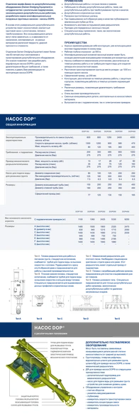

Погружные грунтовые насосы DOP
Дноуглубление, работа в портах и каналах, разгрузка грунтовозных шаланд. Возможны гидравлический и электрический приводы.
Модели и исполнения
Запросить комплектациюДанные в карточках относятся к насосу и агрегату с гидравлическим приводом. Показатели производительности приведены по смеси (пульпе).
Сменные головки серии: тип A для песка, тип B для выравнивания дна, тип C с механическим разрыхлителем для плотного песка, тип D для очистки котлованов, тип E со шнеком для точных работ.
Фотографии и материалы серии

